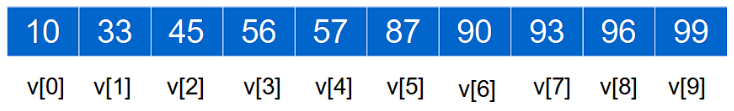
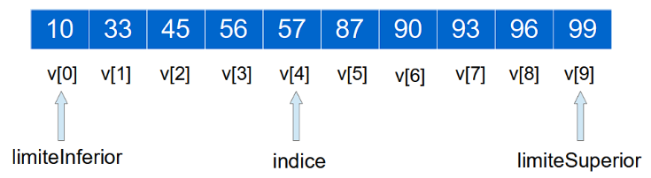
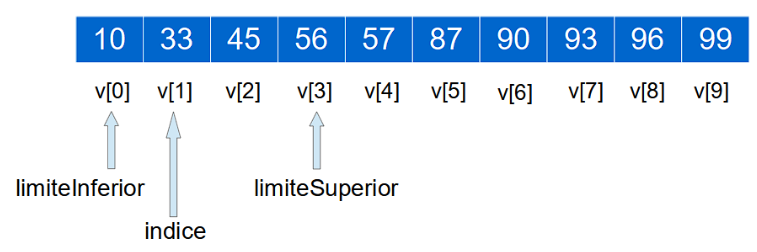
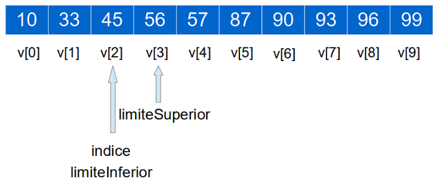

Como ya hemos ido comentando hasta ahora, cuando el array está ordenado, la búsqueda es mucho más eficiente. Partiendo de que el array ya está ordenado usando alguna de las opciones explicadas en los puntos anteriores, la forma más fácil de realizar la búsqueda es utilizar el método binarySearch() de la clase Arrays.
El método binarySearch() de la clase Arrays realiza una búsqueda binaria. Este tipo de búsqueda reduce las iteraciones que se realizan para encontrar el dato, puesto que va acotando los elementos del array en función del dato a buscar. Un ejemplo,

Como se puede apreciar, son 10 elementos de tipo entero ordenados de manera ascendente.
Vamos a suponer que buscamos el elemento 45. Nuestro algoritmo necesitará 3 variables de control:
- Una variable llamada «limiteInferior». Esta variable la utilizaremos para delimitar desde qué elementos empezamos a buscar, empezando por el valor 0. En cada iteración el valor de esta variable puede cambiar.
- Una variable llamada «limiteSuperior». Esta variable la utilizaremos para delimitar desde qué elementos empezamos a buscar empezando por el valor número de elementos - 1. En cada iteración el valor de esta variable puede cambiar.
- Una variable llamada «indice». Esta variable será el elemento que buscaremos en cada iteración. Sí, se trata de un algoritmo iterativo. En cada iteración el valor de esta variable cambiará.
Empezamos a buscar...
- Seleccionaremos como «limiteInferior» la posición 0 de nuestro array.
- Seleccionaremos como «limiteSuperior» la última posición de nuestro array. En este caso 9.
- Calcularemos el valor de nuestra variable índice. «indice» = («limiteInferior» + «limiteSuperior») / 2. En este caso (0 + 9) / 2 = 4.5, al ser un entero se redondea a 4.

- Comprueba si «v[indice]» es igual al elemento buscado. Recordad que estamos buscando el elemento «45».
- Como «v[4]» tiene un valor de «57», nuestro número, en caso de estar en el array tiene que estar hacia la izquierda de «v[4]», porque «v[4]=57» es mayor que «45».
- Cambiamos el valor del «límiteSuperior» al valor de «indice» de la iteración anterior restando 1. En este caso, 4-1 = 3.
- «límiteInferior» se queda como está.
- Calcularemos el nuevo valor de nuestra variable índice. «indice» = («limiteInferior» + «limiteSuperior») / 2. En este caso (0+3) / 2 = 1.5, al ser un entero se redondea a 1.

- Comprueba si «v[indice]» es igual al elemento buscado. Recordad que estamos buscando el elemento «45».
- Como «v[1]» tiene un valor de «33», nuestro número en caso de estar en nuestro array tiene que estar hacia la derecha de «v[1]», porque «45» es mayor que «v[1]=33».
- Cambiamos el valor del «limiteInferior» al valor de «indice» de la iteración anterior sumando 1. En este caso 1 + 1 = 2.
- «limiteSuperior» se queda como está, en 3.
- Calcularemos de nuevo el valor de nuestra variable índice. «indice» = («limiteInferior» + «limiteSuperior») / 2. En este caso (2 + 3) / 2 = 2.5, al ser un entero se redondea a 2.

Venga, que en esta iteración ya vamos a encontrar el elemento buscado...
- Comprueba si «v[indice]» es igual al elemento buscado. Recordad que estamos buscando el elemento «45».
- En este caso «v[indice]», que es «v[2]» tiene un valor de «45», que es el número que estamos buscando, por lo tanto, aquí acaba nuestro algoritmo.
 ACTIVIDAD. Busca en Internet algún algoritmo programado en Java que implemente la búsqueda binaria de forma "casera".
ACTIVIDAD. Busca en Internet algún algoritmo programado en Java que implemente la búsqueda binaria de forma "casera".
¡No te asustes! Aunque la lógica es bastante más compleja que la de una búsqueda normal, Java ya nos lo da hecho. Sólo tendremos que llamar al método binarySearch() para que haga la búsqueda binaria por nosotros. Ejemplo de cómo utilizarlo:
/* Declaraciones necesarias: */
int n = 9;
int [] nums = {2,2,4,4,7,9};
int pos = -1;
/* Búsqueda: */
int pos = Arrays.binarySearch(nums, n);
/* Comprobación del resultado: */
if(pos >= 0){
System.out.println("Número encontrado en la posición " + pos);
}else{
System.out.println("No se ha encontrado el número");
}Necesitaremos tres variables:
1. El dato a buscar (variable n).
2. El array sobre el que realizar la búsqueda, que tendrá que estar ordenado (variable nums).
3. Un entero en el que guardar la posición que ocupa el dato en caso de existir en el array (variable pos).
La lógica es la misma que en el caso de la búsqueda normal: si el valor existe en el array, la variable pos tomará el valor de la primera posición en la que se encuentre dicho valor. En caso contrario, la variable pos tomará un valor negativo.